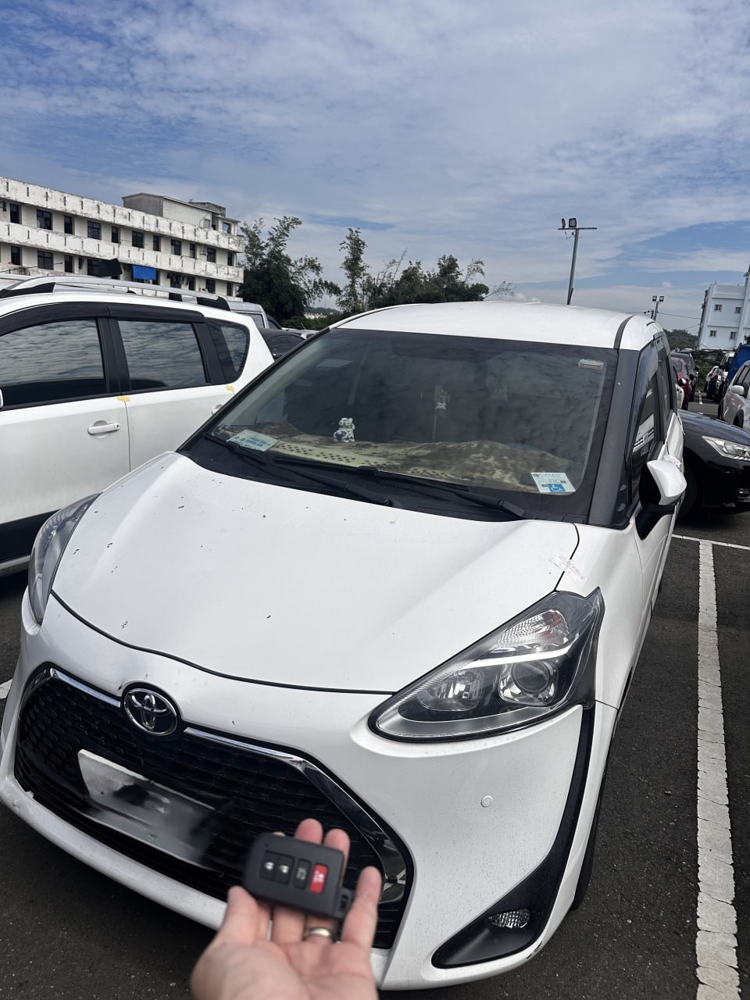

實戰現場：彰化和美，Sienta 智能鑰匙新增備份與交車確認
靈活空間神車：備份鑰匙是全家用車的安心規劃
Toyota Sienta 以其優異的空間機能與側滑門設計，成為台灣家庭與商務的首選車款。其搭載的智慧感應系統（Smart Entry & Push Start）雖然便利，但若僅存一支鑰匙，一旦發生遺失，全丟救援的成本與時間將大幅增加。
在彰化和美現場，我們為客戶評估新增備份鑰匙需求。先確認車款年份、原鑰匙狀態與使用需求，完成後再確認新鑰匙基本使用狀態，讓客戶多一份日常用車保障。
新增備份確認
專用設備對接，30 分鐘內完成系統同步，保留原廠所有遙控與感應功能。
全方位跨區
極致核心 ProCore 覆蓋中彰投，彰化和美地區可享快速到府/展間服務，無需預約排隊。